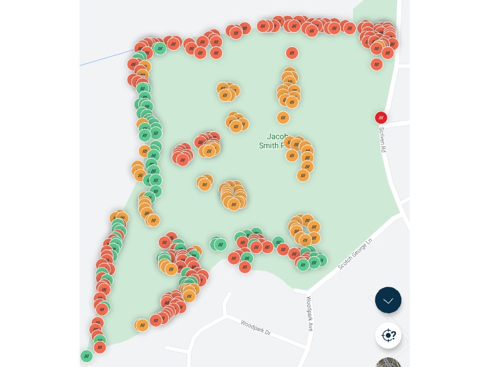
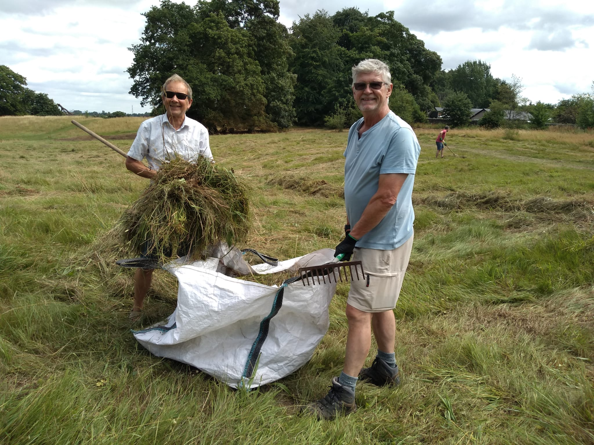
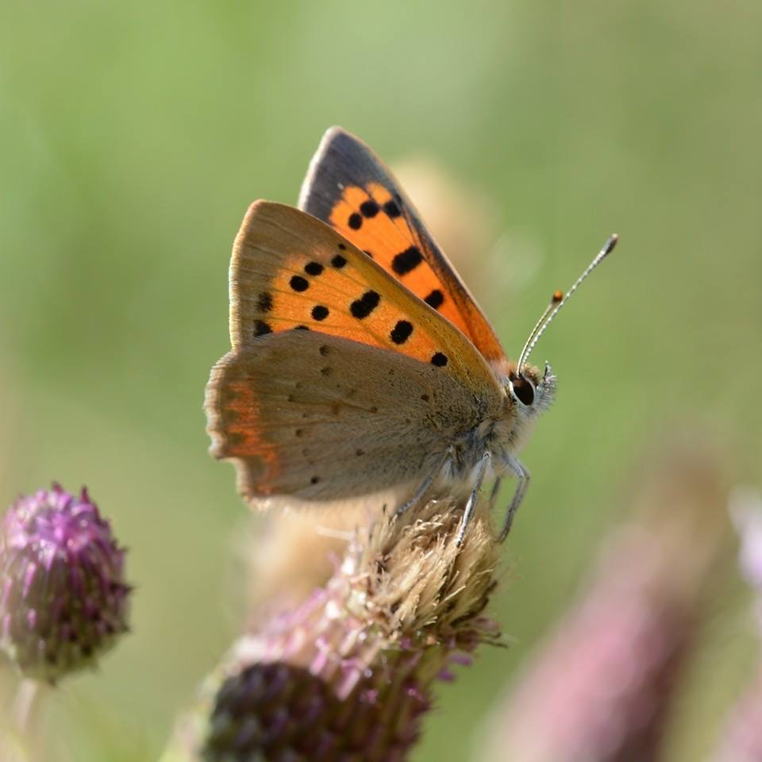

25 September 2026
Butterflies 2026
What a year it’s been, with even more butterflies than in the hot summer of 2025. The tendency for the park to be damp really helped plants to keep growing and support our resident species, even those not keen on the heat.
Anyone taking part in the Big Butterfly Count in July may have seen up to 16 different species in the park in good numbers, particularly grassland butterflies: Ringlet, Meadow brown, Gatekeeper, Small Skipper, Small copper and Speckled wood. Now the last butterflies of autumn: Red admiral, Comma, Speckled wood and Painted Lady are feeding on ivy flowers.

1 September 2026
Update on Himalayan balsam
Huge strides have been made this year. We targeted the remaining 2 problem areas: the pond area and under the fallen tree. Around the rest of the park there were small groups of plants that were also sought out and removed.
It is wonderful to see native plants starting to fill spaces previously occupied by balsam. It will be back next year, but we will be ready!

21, 22 & 29 August 2026
One man went to mow
THANK YOU to everyone who helped rake the meadow over 3 sessions. After the contractor cut down the meadow area, volunteers spent over 32 man hours raking and moving grass, targeting the areas most associated with orchids and wildflowers.
It was an AMAZING effort by everyone and will really benefit the meadow when it starts growing again in the spring.

10 July 2026
Butterfly Conservation Wild Space registration
Jacob Smith Park is now registered as part of the Butterfly Conservation Wild Space Scheme. This encourages areas of land, big and small, to be maintained in a way that helps butterfly populations recover and aims to eventually provide a network of wild spaces, allowing populations to move between areas.
See Jacob Smith Park on the Wild Spaces map →